Anomalie
Prologue
Weddings have become quite expensive in the United States and wedding dresses have gone up in price along the same trajectory. These dresses are all made in large factories with standard templates and thus the options available to new brides are not very enticing if you want to be unique for your special day. This is where Anomalie comes in to help. They pair brides up with stylists to create bespoke dresses at bargain prices.
Conflict
Anomalie’s products were mostly built ad hoc on an as-needed basis. The company was doing very well but the systems that were put in place were not scalable for the amibition for where it wants to go (beyond just bridal wear to other apparel). They need to build a new platform from the ground up without disrupting the current business engine producing thousands of dresses a month.
On top of this, the bridal experience had a lot of drop off when they first started the application and thus, there was a need to find more engagement to hook brides to create their dress.
Main Character
Via Slalom Consulting, I was recruited by Anomalie’s Chief Experience Officer to come in and set the foundation for this bold new product initiative. It would involve both product management and product design and I was really excited to take on such a role since it allows me to think along the two main pipelines of bringing a new product to market. I led this iniative that included an internal designer and front-end developer on the Anomalie side.
Cast (Team)
- Product Design Manager (me)
- Lead Designer
- Front-end Developer
- Full Stack Engineer
- CEO
- Chief Experience Officer
Specifications
- Sketch
- Invision
- Zeplin
- Mobile Design
- Desktop Design
- Rapid Prototyping
Survey the landscape
User Research being squeezed is typical within startups since every quarter can make or break the company. My first user is the company itself and so I wanted to get a pulse of the landscape of the executive team and key stakeholders so that I would come to design thinking with some element of knowledge on what the company needs.


After 1:1 and group interviews, I came up with the following core focus areas:
- Internal employees should have a more streamlined process for all their tasks
- Stylists should be bettter equipped to help Brides better to close on a dress
- Brides need a better experience for visualizing and managing their dress
Bullet points are cute but how do they actually translate to work? I wanted to start to think about the actual features that would need to be incorporated. I conducted heurestic reviews of their current product with the help of the team and also uncovered user feedback that has been collected over the years. As a team, we conducted some competitive analysis and had fun sharing what worked well and didn’t work well.
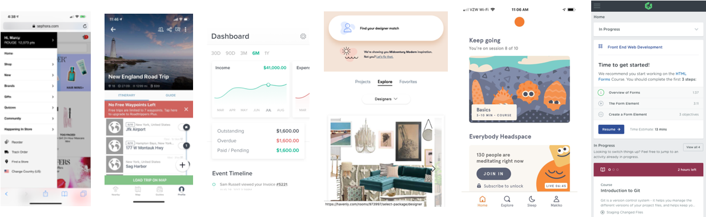
Some key takeaways that would empower design sessions included the following themes:
- Make sure the next step you need to take really obvious
- Global timeline or progress indicator is important
- Show time estimates for each task
- Incorporate educational content contextually
Tactical steps
I leveraged the above to start to empathize with the users and documentent user stories to be imported into the company’s Kanban board. This was inputed into their tool by the Product Manager after each and every one was validated and scoped by the Engineering team as they went through the full lifecycle of the project.
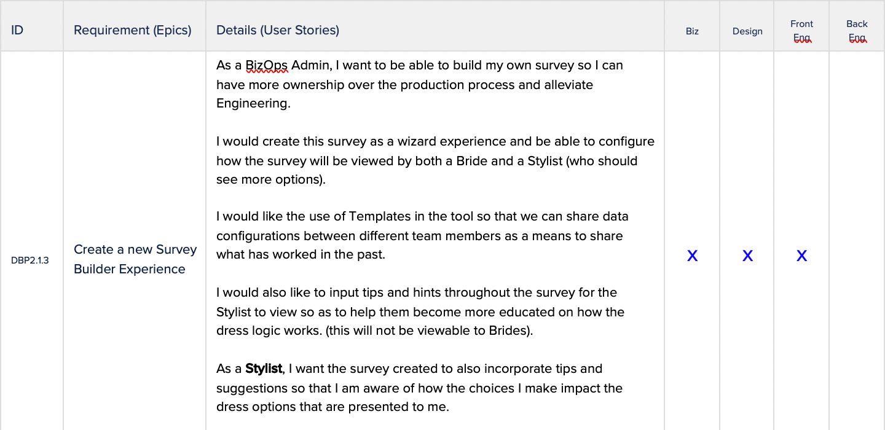
Really mini roadshow
I did a mini roadshow, something that may sound silly for a company this size, but necessary since the executives and key stakeholders have the need for extra transparency since every wrong decision can lead to a thousand paper cuts.

Fork in the design road
There were two core pathways for design: internal Stylists and external Brides. The Brides portion was far more nebulous so the project team rolled up sleeves and did some research. I handled the Stylist in parallel and we toggled back and forth providing inputs to each other as we went along.
The Stylist road
Reviewing the stories that were in place, I broke them down into more detail to identify design approaches:
- Save Stylists time when doing tasks that can be automated or streamlined
- Stylists should be better at being educated about all things that go into making a dress
- Stylists should have more visibility into what is happening with their brides so they can be the most helpful
Anomalie Stylists had never had their user flow mapped out before but I felt it was important to empathize with what they do for every single bride. It also helped everyone undertsand how their lives could be improved upon when I proposed changes based on factors mentioned above.
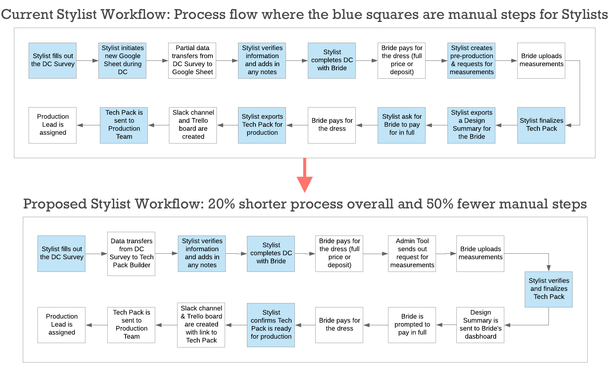
The Stylists did most of their work in spreadsheets with different tabs based on materials. After consulting how best to design a dress on the Bridal view, we had come to identify that the different parts of the dress would be broken up into sections. It seemed that it made sense to do that as well for the Stylist view and then also use tabs for other unique functions in assembling a dress.
Here is a screen of the final design with some highlights overlaid on the image on how the themes were applied: 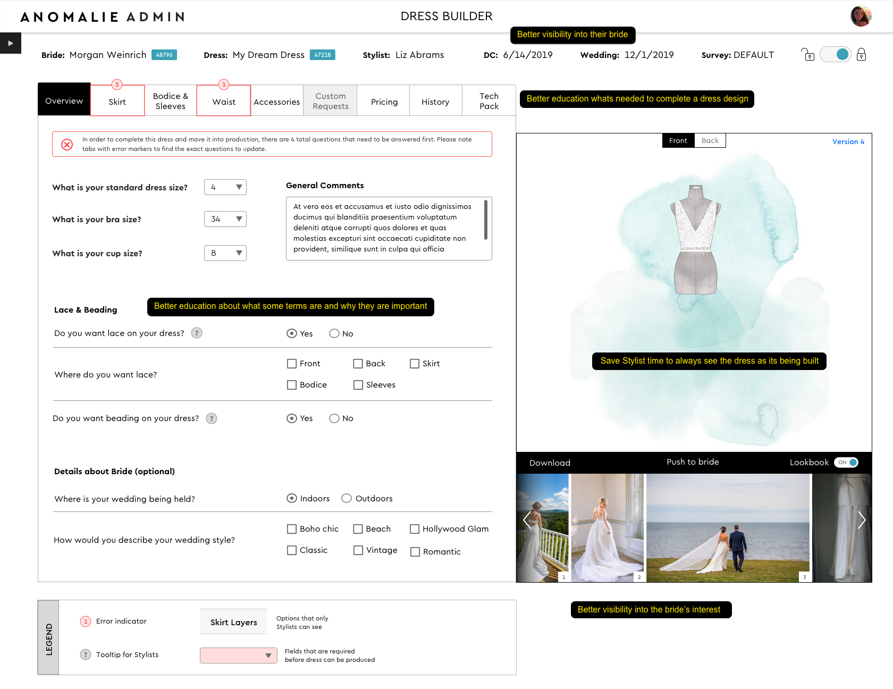
It was also then put into an Invision prototype and shared with the bigger Operations teams to fabulous feedback. Please check it out here.
The Bridal road
Brides need a holistic product and that requires the company building it to have a holistic flow from before the Bride starts to all the way through the production life cycle. I created this document using LucidChart so the entire team could think the same way.
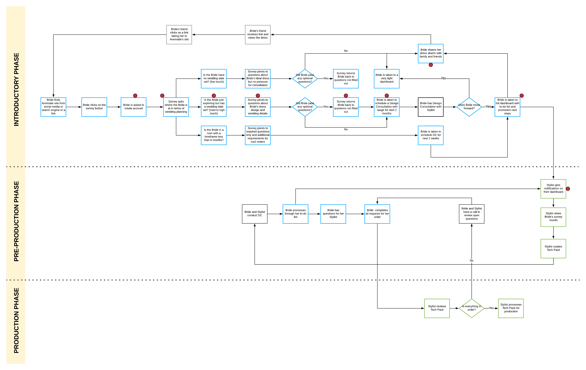
While I was doing the Stylist experience, I helped the rest of the team on creating concepts for the Bridal experience and as a truly collaborative effort, we cobbled different portions of our mockups into one beautiful Frankenstien.
We focused on the following themes in our collective designs:
- Brides should be better educated about what is being asked of them during the survey
- Brides should be able to visualize every customization they want to make about the dress
- Brides should have be able to play with the design as she is creating it
As a team, we had some group design sessions, working via hand sketches to figure out the right flow:
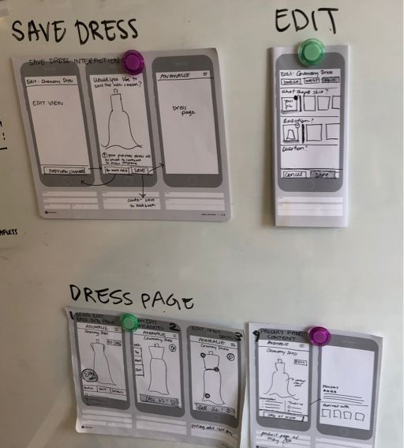
Here are some of how some of the themes came into designs:
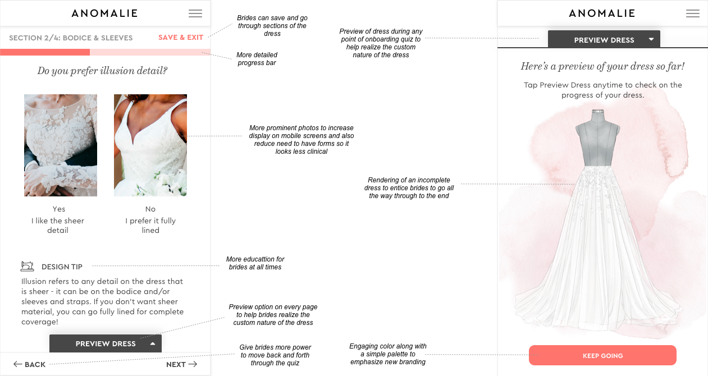
Design rodeo
I managed the design team in terms of executing upon the requirements but there were 3 different resources spread across different locations. Not to mention all the stakeholders who also needed to provide input on design. This led to many many many different versions where we needed to consolidate.
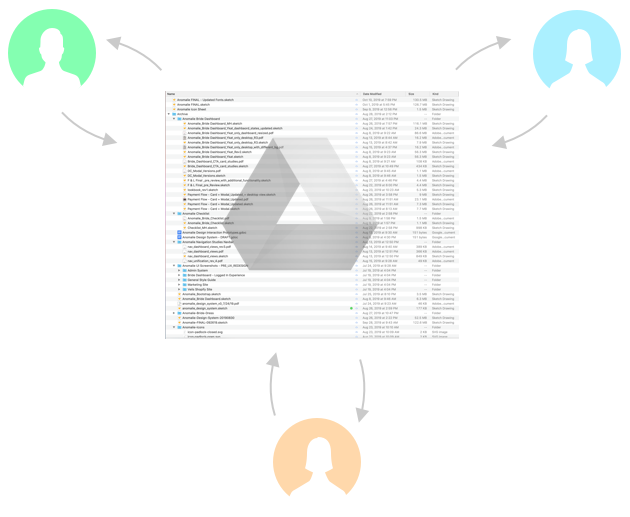
A problem surfaces!
Just when we thought we had come up with good ideas and had established a path for implementation, when we did a final review with Engineering, it was found that we could not do instananeous updates to the dress in real time. We had to pare down this feature as part of the Bridal experience.
Here are some screens of the final design with some highlights on how the themes were applied. There were 100s of screens that were worked on but this is just a sample:
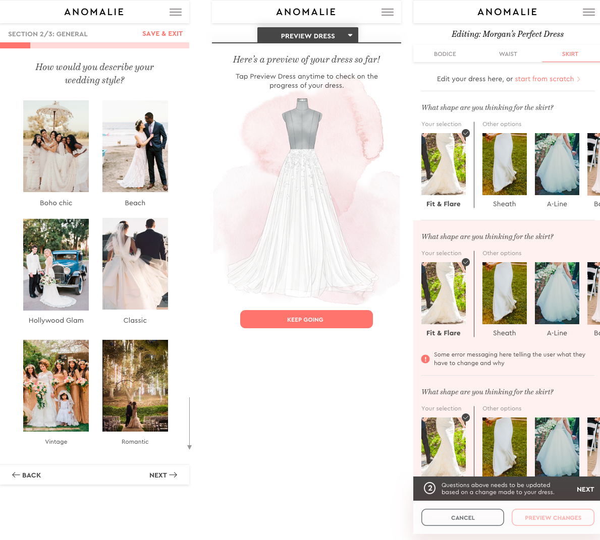
Conclusion
The Stylists were thrilled with their new product to manage their workflow and did not miss the remedial tasks at all. It was the first thing built by the Engineering team. In regards to the Bridal experience, a famous user researcher walked through the designs and the mission statement and gave a very favorable review. Every bride who also tested it while in the office also confirmed the redesign was a huge improvement. The design is ready to be launched to the general public very soon.
Click on the image below to view the Invsion prototype:

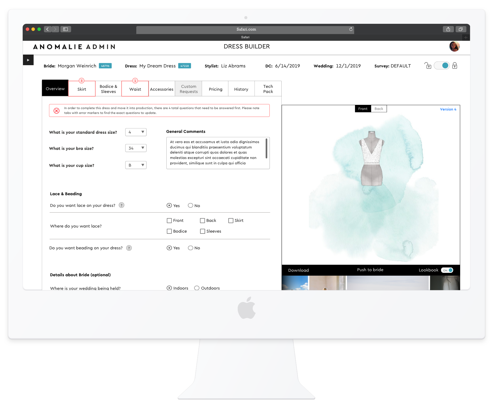
One more thing…
Since we had over 100 screens, it was hard to understand how it fit into the overall flow. I wanted the Engineering handoff to go smoothly so tied the names of Sketch boards to the Requirements I documented earlier. This way there would be no confusion which story belonged with which design. This would also help scale as requirements expanded and so did Sketch artboards.
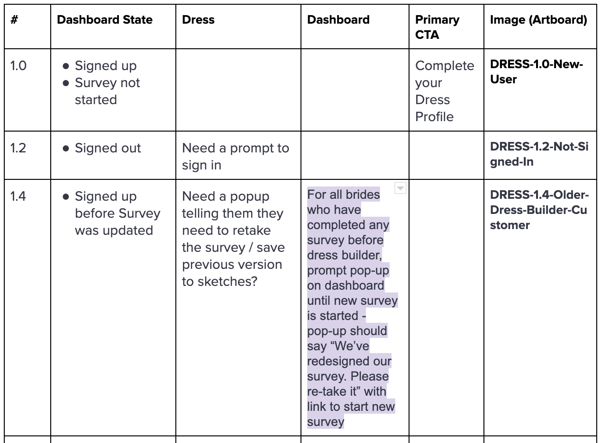
Epilogue
- Project was delivered in a timely fashion which was critical to keep the company afloat
- Stylist workflow reduced by 50% due to some automation
- Bridal view will be released emphasizing visualizing the dress more prominently and giving Brides a more informed and joyful experience
Spoilers
New Bride Experience


Bride Modifying Her Dress


Bride managing her Dashboard


Bride Uploading Dress Measurements
Stylist Managing her Bride’s Dress


Admins managing Stylists